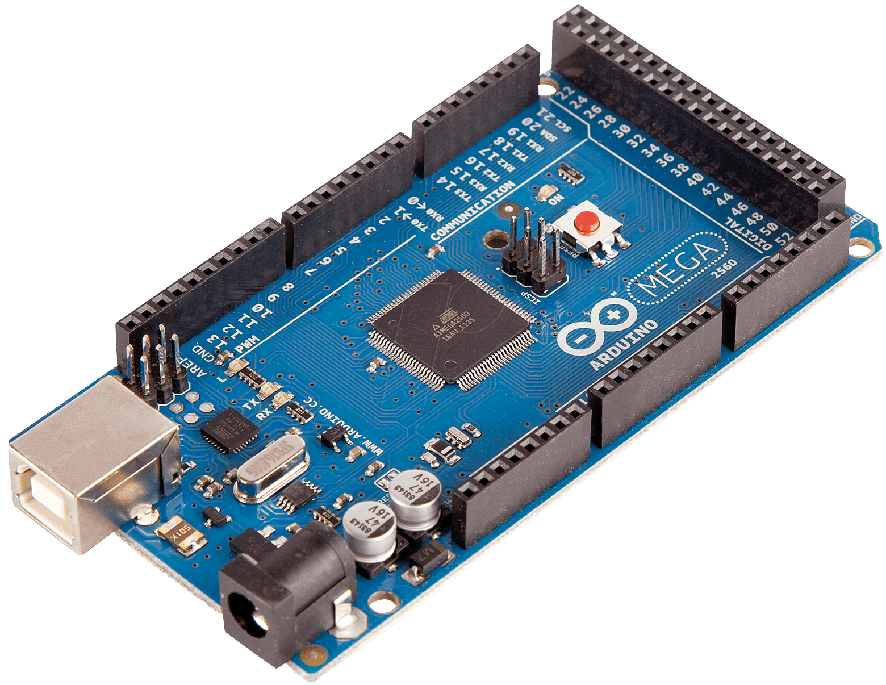

Arduino Mega2560
This is the documentation for the port of NuttX to the Arduino Mega 2560 Rev3. The board is based on the ATMega2560 chip from Atmel.

The Arduino ATMega2560 micro-controller board.
Toolchain
To learn more about installing the required tool-chain, read the “Toolchain” section of AVR ATMega2560.
Configurations
Each Arduino MEGA2560 configuration is maintained in a sub-directory and can be selected as follow:
$ tools/configure.sh arduino-mega2560:<subdir>
Where <subdir> is one of the configuration sub-directories described in the
following sub-headings.
By default, all configurations assume the Atmel Studio AVR8 toolchain under Cygwin with Windows. This is easily reconfigured:
CONFIG_HOST_WINDOWS=yCONFIG_WINDOWS_CYGWIN=yCONFIG_AVR_BUILDROOT_TOOLCHAIN=y
Build with GCC disables CONFIG_DEBUG_OPT_UNUSED_SECTIONS by default. This is
because the linker script was not checked to determine if it properly prevents
removal of sections which the linker considers unreferenced but which must be
present in the binary.
hello
The simple apps/examples/hello “Hello, World!” example. The output is
displayed on UART0 at a baud rate of 38400, 8N1.
nsh
This is a reduce NuttShell (NSH) configuration using apps/example/nsh. The
serial console is provided on USART0 and can be accessed via a serial terminal
at a baud rate of 38400, 8N1.
Note
As of 2015-01-16, the default static memory usage is:
$ size nuttx.elf
text data bss dec hex filename
34348 2117 944 37409 9221 nuttx.elf
And dynamic, heap usage:
nsh> free
total used free largest
Mem: 4736 1768 2968 2968
There is plenty of FLASH space but not a lot of free SRAM. This SRAM usage is due primarily to constant strings defined by NSH.
I investigated the possibility of adding IPTR/IOBJ qualifiers in the NSH library and moving the strings to FLASH. This is still a possibility but would require some extensive changes to NSH.